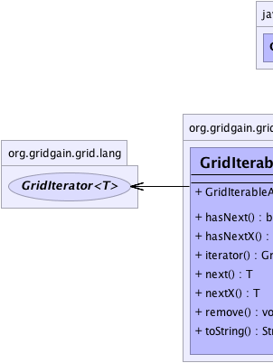
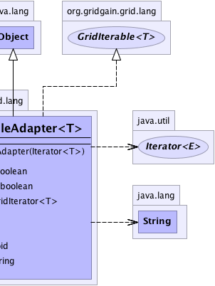

org.gridgain.grid.lang.GridIterableAdapter<T>
org.gridgain.grid.lang.GridIterableAdapter<T>
|
GridGain™ 3.6.0c
Community Edition |
|||||||||
| PREV CLASS NEXT CLASS | FRAMES NO FRAMES | |||||||||
| SUMMARY: NESTED | FIELD | CONSTR | METHOD | DETAIL: FIELD | CONSTR | METHOD | |||||||||
java.lang.Object
public class GridIterableAdapter<T>
Convenient adapter for "rich" iterable interface.
| Wiki | |
| Forum |
|  |  |
| Constructor Summary | |
|---|---|
GridIterableAdapter(Iterator<T> impl)
Creates adapter with given iterator implementation. |
|
| Method Summary | |
|---|---|
boolean |
hasNext()
|
boolean |
hasNextX()
This method is the same as Iterator.hasNext(), but allows for failure
with exception. |
GridIterator<T> |
iterator()
Returns GridIterator which extends regular Iterator interface
and adds methods that account for possible failures in cases when iterating
over data that has been partially received over network. |
T |
next()
|
T |
nextX()
This method is the same as Iterator.next(), but allows for failure
with exception. |
void |
remove()
|
String |
toString()
|
| Methods inherited from class java.lang.Object |
|---|
clone, equals, finalize, getClass, hashCode, notify, notifyAll, wait, wait, wait |
| Constructor Detail |
|---|
public GridIterableAdapter(Iterator<T> impl)
impl - Iterator implementation.| Method Detail |
|---|
public GridIterator<T> iterator()
GridIterator which extends regular Iterator interface
and adds methods that account for possible failures in cases when iterating
over data that has been partially received over network.
iterator in interface Iterable<T>iterator in interface GridIterable<T>GridIterator.public boolean hasNext()
hasNext in interface Iterator<T>
public boolean hasNextX()
throws GridException
Iterator.hasNext(), but allows for failure
with exception. Often iterators are used to iterate through values
that have not or have partially been received from remote nodes,
and need to account for possible network failures, rather than
just returning false out of Iterator.hasNext() method.
hasNextX in interface GridIterator<T>GridException - If no more elements can be returned due
to some failure, like a network error for example.
True if iterator contains more elements.Iterator.hasNext()public T next()
next in interface Iterator<T>
public T nextX()
throws GridException
Iterator.next(), but allows for failure
with exception. Often iterators are used to iterate through values
that have not or have partially been received from remote nodes,
and need to account for possible network failures, rather than
throwing NoSuchElementException runtime exception.s
nextX in interface GridIterator<T>GridException - If no more elements can be returned due
to some failure, like a network error for example.
True if iterator contains more elements.Iterator.next()public void remove()
remove in interface Iterator<T>public String toString()
toString in class Object
|
GridGain™ 3.6.0c
Community Edition |
|||||||||
| PREV CLASS NEXT CLASS | FRAMES NO FRAMES | |||||||||
| SUMMARY: NESTED | FIELD | CONSTR | METHOD | DETAIL: FIELD | CONSTR | METHOD | |||||||||
|
GridGain - Real Time Big Data
|
|

|
|